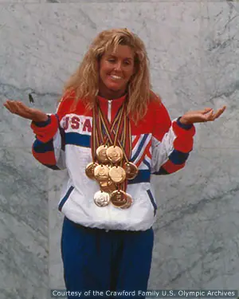
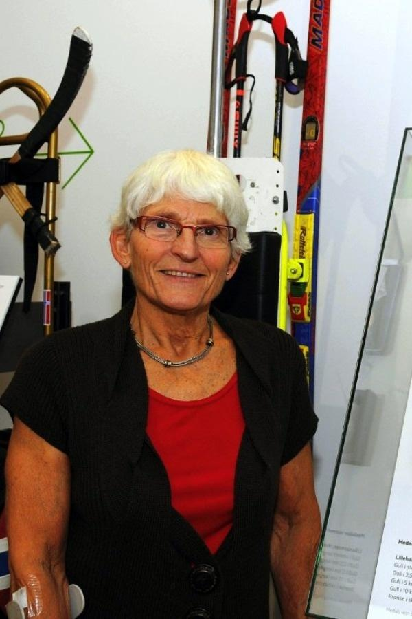
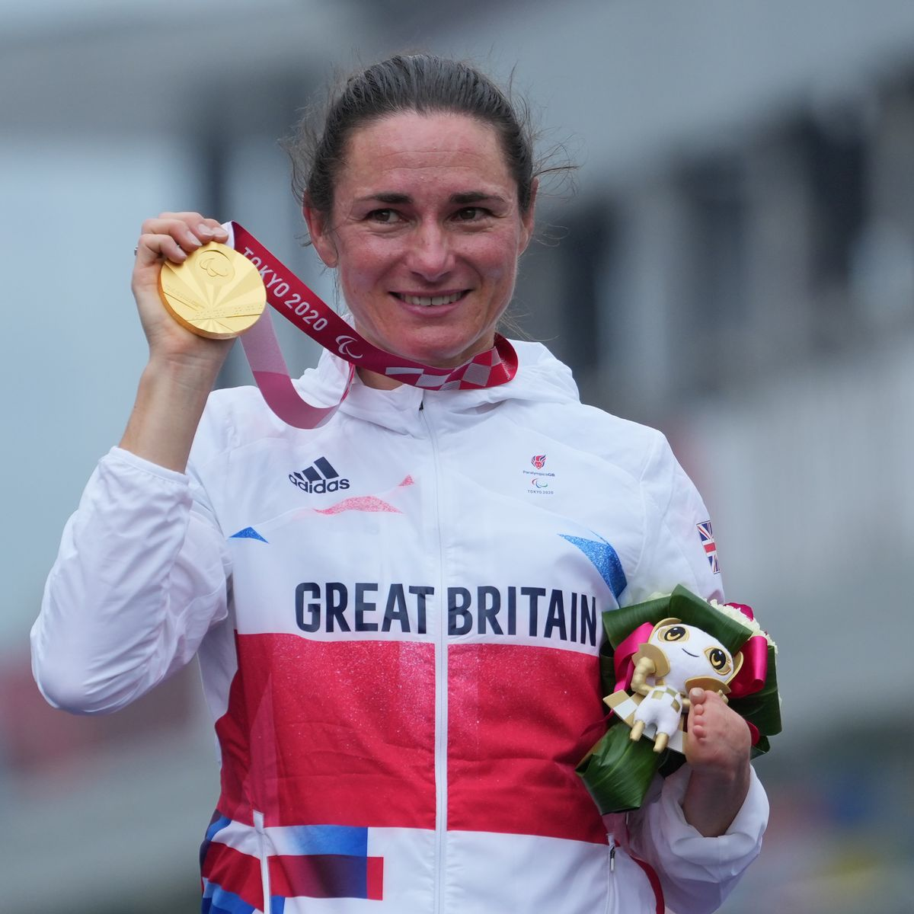
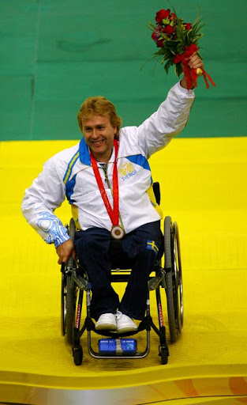

FAMOUS PARALYMPIANS AND THEIR ACHIEVEMENTS
FAMOUS PARALYMPIANS AND THEIR ACHIEVEMENTS
- TRISCHA ZORN

★Born June 1, 1964 in Orange, California is an American Paralympic swimmer.
★Blind from birth, she competed in Paralympic swimming.Despite her handicap, she was fast and
had precision in her swimming. Zorn is rated as one of the best athletes ever
★She is the most successful athlete in the history of the Paralympic Games, having won 55 medals
(41 gold, 9 silver and 5 bronze), and was inducted into the Paralympic Hall of Fame in 2012.
★She took the Paralympic Oath for athletes at the 1996 Summer Paralympics in Atlanta.
- RAGNHILD MYKLEBUST

★Ragnhild Myklebust is known as the queen of the Winter Paralympics because of her 22
gold medal victories. She was born on December 13th in the year 1943 and she is a Norwegian Nordic skier.
★The skier Ragnhild is suffering from polio from her childhood to date. She is the record holder for the most
ever medals won at the Winter Paralympics with having 27 medals achieved and of which 22 are only gold medals.
★ Myklebust has won Paralympic medals in short races, middle races, and long-distance races. Also, she has participated
in cross-country races, relays races, biathlon races, and ice sledge racing too.
★ She was also honored with the Government Paralympic award and many more for her devotion and spirit for the sports.
- SARAH STOREY(née Bailey)

★Dame Sarah Joanne Storey, DBE was born on 26
October 1977, without a functioning left hand after her arm became entangled in the umbilical cord
in the womb and the hand did not develop as normal.
★She is a British Paralympic athlete in cycling and swimming,
and a multiple gold medalist in the Paralympic Games, and six times British
(able-bodied) national track champion. Her total of 28 Paralympic medals including 17 gold medals makes
her the most successful (by gold medals) and most decorated (by total medal
s) British Paralympian of all time as well as one of the most decorated Par
alympic athletes of all time.
★Storey's major achievements include being a 29-time World champion (6 in swimming and 23 in cycling), a 21-time European
champion (18 in swimming and 3 in cycling) and holding 75 world records.
- JONAS JACOBSSON

★Jonas Jacobsson, born on 22 June 1965, is a Swedish sport shooter who has won several
gold medals at the Paralympic Games.
★Jonas was born paralysed waist down but this didn't stop him from becoming one ofthe most
well known paralympic athlete.
★He participated in ten consecutive Summer Paralympics from 1980 to 2016, winning a total of
seventeen gold, two silver, and nine bronze medals.
★On 10 September 2008 Jacobsson won his 16th gold medal in the Paralympic Games making him the
best performing male Paralympics contestant so far. Later that year,
he became the first athlete with a physical disability to receive the
Svenska Dagbladet Gold Medal, Sweden's most significant sports award.
Click here to go pg5!